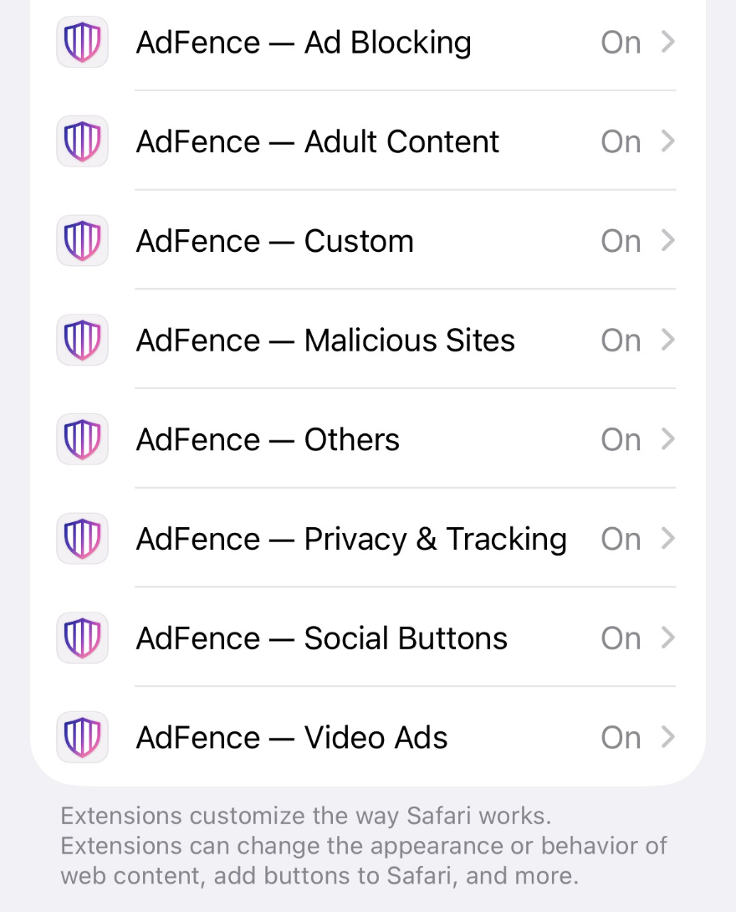
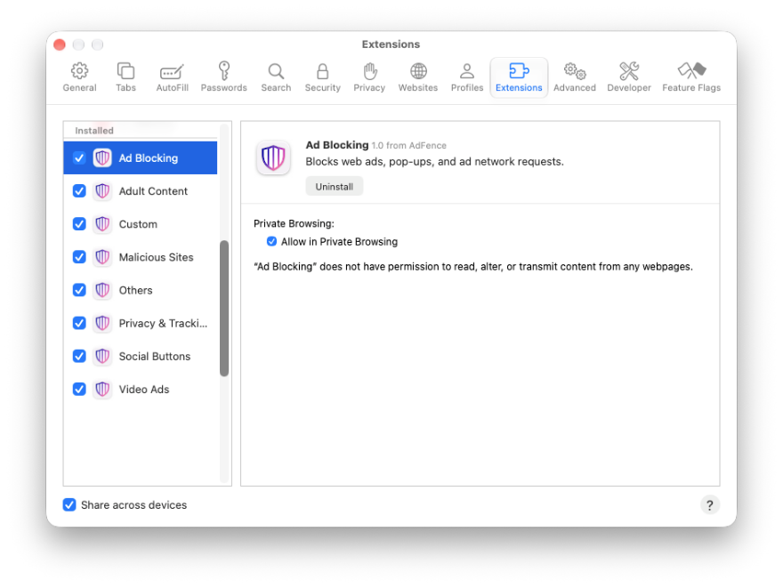
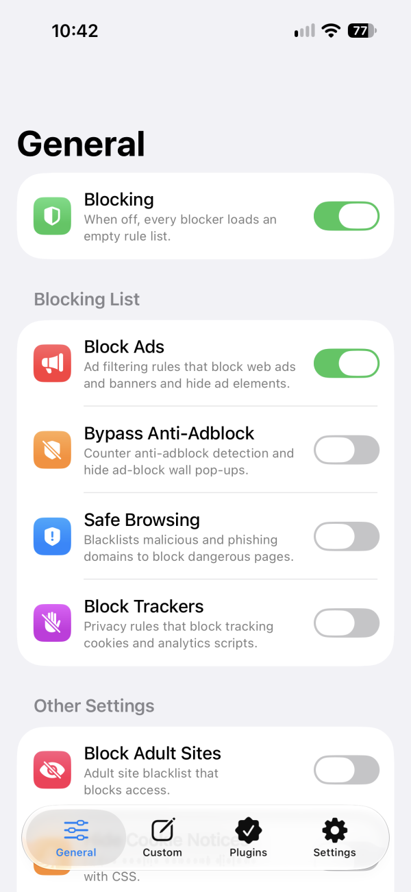
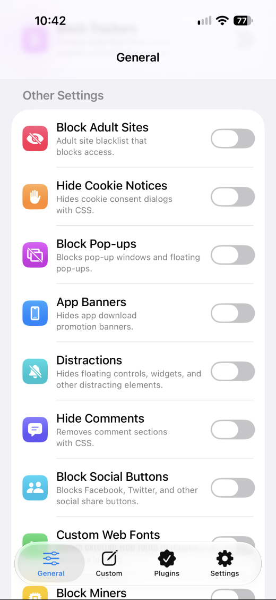
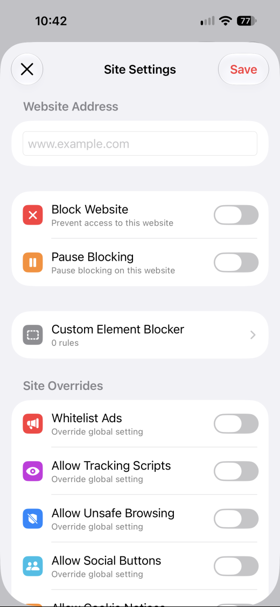
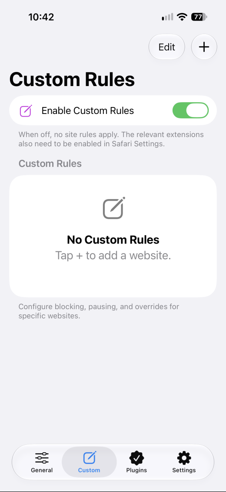

How to use AdFence
Switching it on takes about a minute. Everything after that is optional tuning — five screens, in the order you'll meet them.
Switch it on in Safari
Installing AdFence isn't the last step. Safari keeps every extension off until you turn it on by hand, and that is the reason a blocker usually looks like it does nothing.
iPhone & iPad
- Open Settings and tap Safari.
- Tap Extensions, then AdFence.
- Turn it on, and allow access to the websites you want it to work on.

Mac
- Open Safari.
- Go to Safari → Settings → Extensions.
- Tick AdFence, then choose which sites it can access.

Then open AdFence and tap Plugins. The app asks Safari directly and shows a green Active beside each of its eight extensions. Refresh Status re-checks, and Open Safari Extension Settings jumps straight to the right screen.
Choose what to block
The General tab opens with a master switch called Blocking. While it is off, every blocker loads an empty rule list and nothing is blocked anywhere. Keep it on and use Blocking List underneath to pick filters one at a time.
- Block Ads — web ads and banners, and the empty boxes they leave behind.
- Bypass Anti-Adblock — gets past pages that detect a blocker, and hides the wall they put in the way.
- Safe Browsing — blocks known malware and phishing domains before the page loads.
- Block Trackers — tracking cookies and analytics scripts.
The switches are independent: turning one off leaves the others exactly as they were.

Hide the clutter you didn't ask for
Keep scrolling on General. Other Settings holds the rest of the filters — cookie notices, pop-ups, app banners, comments, social buttons, miners and more. Every one is a separate switch, so hiding cookie banners never forces you to block ads.
Some of these hide an element from the page with CSS rather than blocking a request; the line under each switch says which it does.
Block Adult Sites lives here too. It is an optional domain blacklist, and there is no passcode on it — it is a convenience, not parental control.

Fix one site without touching the rest
Not every site deserves the same treatment. Open the Custom tab, tap +, and the Site Settings sheet opens with a field for the address.
- Block Website — prevents access to the site entirely.
- Pause Blocking — turns AdFence off for this site alone; everywhere else is untouched.
- Custom Element Blocker — your own CSS rules for elements on this site.
- Site Overrides — whitelist ads, or allow tracking scripts, unsafe browsing, social buttons or cookie notices, for this address only.
Tap Save and the site joins your list.

Keep a list of your own rules
Every site you configure lands on the Custom tab. Enable Custom Rules is the master switch for the whole list: while it is off, no site rules apply at all. The extensions behind those rules also have to be on in Safari — that is what the Plugins tab is for.
Edit lets you reorder or remove entries; + adds another site.

Three things worth checking first
A site looks broken
Turn on Pause Blocking for that one site in Site Settings and leave it running everywhere else.
Nothing is blocked anywhere
Open the Plugins tab. An extension that isn't Active in Safari can't block anything, whatever the app is set to.
Cookie banners still appear
Cookie notices are a separate switch from ads. Look under Other Settings on the General tab.
Ready when you are
AdFence for iPhone, iPad and Mac. No account, no sign-up — enable the extension in Safari once and you're done.